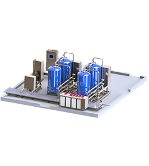
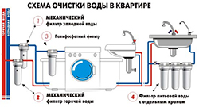
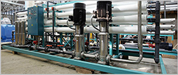

Что такое водоподготовка?
Водоподготовка — обработка воды, поступающей из природного или искусственного водоисточника, для приведения её качества в соответствие с требованиями технологических потребителей. Она включает несколько ступеней:
- очистка от примесей — сора, песка, различных взвесей;
- обессоливание — вывод из воды солей кальция и марганца, соды и других;
- удаление растворённых газов и оксидов;
- биологическая очистка;
- улучшение органолептических свойств — вывод хлора, сероводорода и органических веществ.
Водоподготовка бывает бытовая, промышленная и полупромышленная. Изрядную часть водоподготовки проводят официальные учреждения и предприятия водоснабжения — «Водоканал» или другие. Здесь проводятся первичная обработка и очистка воды от многих примесей. А вот подготовка воды для питья, готовки и водных процедур уже проводится потребителями.

Бытовая водоподготовка включает дополнительную очистку воды для питья, удаление из водопроводной воды остатков хлора и органики, накипи, сора и ржавчины. Обычно водоподготовка в квартире представлена несколькими дополнительными фильтрами — отдельный фильтр (многоступенчатый) для питьевой воды, включающий очистку от вредных примесей, тонкую очистку и, зачастую, минерализацию воды для повышения качества и вкуса; один или несколько фильтров для «технической» воды, используемой для мытья и хозяйственных работ, чаще всего, здесь происходит дополнительная очистка и умягчение воды.

Промышленная и полупромышленная водоподготовка включает целые комплексы очистки воды для различных целей. Например, владельцы отелей и спортивных клубов зачастую устанавливают систему водоочистки и подготовки воды для общественных бассейнов, куда входит дополнительное обеззараживание и очищение воды, а в промышленности в систему водоподготовки входит задание определённого химического и физического состава воды, участвующей в производстве.